Displacement equations
In order to simplify the formulation of the displacement equations used in this system we perform a transformation between the global (real world) reference frame and a local reference frame, which is used only for the displacement equations. This transformation consists of a translation followed by a rotation prior to the enactment of each displacement equation, followed by the inverse rotation and translation after it. In the following sections the displacement equations are given for the local reference frame, and only in the Lagrangian form. In most cases the Eulerian form of the equations may be easily derived from the Lagrangian form, however for curved and elliptical faults a Newton-Raphson iterative algorithm is used to calculate the Eulerian displacements.
Faults
Five different faults geometries are currently supported, ranging from simple planar faults with uniform translation or rotation of one block relative to the other; to arbitrarily curved surfaces defined by a profile, where the translation vector is a function of position relative to the surface, and dies off to zero outside the area of influence of the fault. In each case the equations show the example of hanging wall only slip.
Translation Faults
In the local reference frame, the fault plane is the YZ plane, with slip in Y direction.
The kinematics are defined by:
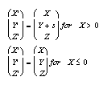
where s is the slip vector.
Rotational Faults
In the local reference frame, the fault plane is the YZ plane, and the X axis is the rotation axis.
The kinematics are defined by:
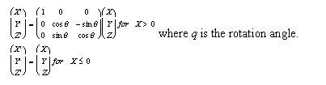
Ring Faults
In the local reference frame, the tangent to the fault plane and the slip vector are always parallel to the Y axis.
The kinematics are defined by:
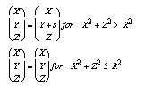
where s is the slip vector and R is the radius of the ring fault.
Elliptical Faults
The displacement equations for elliptical faults, where slip decays away from the centroid of the fault, are based on the empirical equations developed in Walsh and Watterson (1987). In the local reference frame, the fault plane is the YZ plane, with slip in Y direction.
The kinematics are defined by:
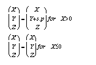
where s is the maximum slip, and p is a function of position within the ellipsoid of deformed rock defined by:
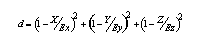
where Ex, Ey and Ez are the principal axes of the ellipsoid
Curved Faults
The displacement equations for curved faults, are similar to those used for elliptical faults, where slip decays away from the centroid of the fault, but when combined with curved fault surfaces they require a term for the displacement of points perpendicular to the fault surface (parallel to local X), so that all points maintain a constant distance from the fault.
The kinematics are defined by:
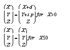
where s is the maximum slip, d is the difference between a point and the fault surface before and after deformation, and p is a function of position within the ellipsoid of deformed rock defined by:
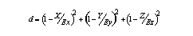
where Ex, Ey and Ez are the principal axes of the ellipsoid that encloses the faulted volume.
Unconformities
Unconformities do not imply any displacement, as they merely define a planar discontinuity.
Folds
The similar fold model currently supported is probably the weakest representation of its true counterpart, and does not allow upper crustal, flexural slip geometries.
The kinematics are defined by:
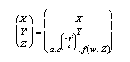
where ƒ() is either a simple sinusoid function or a Fourier series, which allows arbitrary fold profiles to be generated, w is the fold wavelength, a is the fold amplitude, and c is a parameter that controls fold cylindricity.
Shear Zones
Shear zone kinematics are the same as those for faults, except that the slip is distributed continuously within a parallel sided shear zone, rather being concentrated on a discrete fault plane.
Dykes
Dyke are infinite parallel sided bodies which can either be stope-like, with the country rock replaced by dyke material, or dilatational, which implies the creation of a void space to be filled by the dyke material.
Dilatational Dyke
The kinematics are defined by:
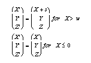
where w is the dyke width.
Plugs
Plugs can only be stope-like, with a replacement model for plug emplacement. Simple geometric forms can be defined (cylinders, paraboloids, cones and ellipsoids) or complex voxel geometries can be imported. In the future, the displacement equations described by Guglielmo (1993) could become the basis for a forced emplacement model.
II.8 Homogenous Strains
A strain tensor can be defined to homogenously deform the geology.
The kinematics are defined by:
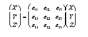
Tilts
A uniform tilt can be defined to rotate the geology.
The kinematics are defined by:
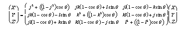
where j,k,l is the unit vector defining the axis of rotation, and q is the angle of rotation.
Penetrative Foliations and Lineations.
These deformation events are not explicitly associated with a volume change or strain, however they can be combined with homogeneous strains if needed. Some of the deformation events implicitly produce cleavages and lineations, for example folds produce an implicit axial plane cleavage and a fold axis lineation, whose orientation can be displayed symbolically on map views.
Noddy · open source under the MIT licence · Loop3D/noddy_qt